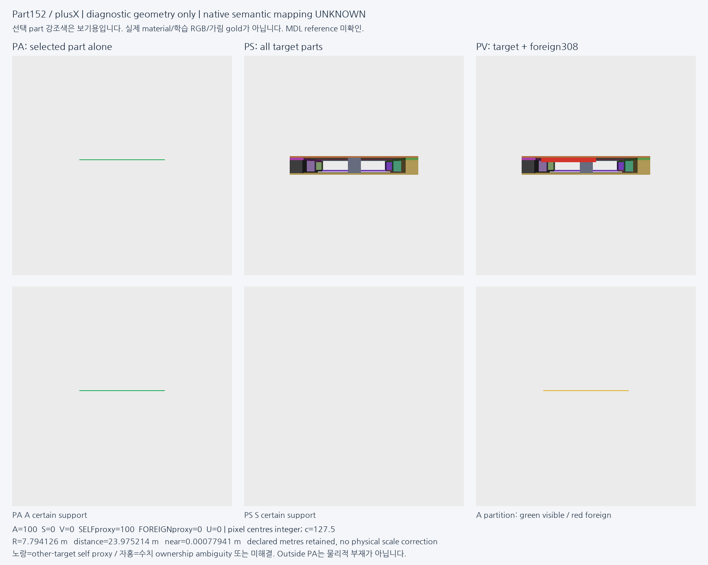
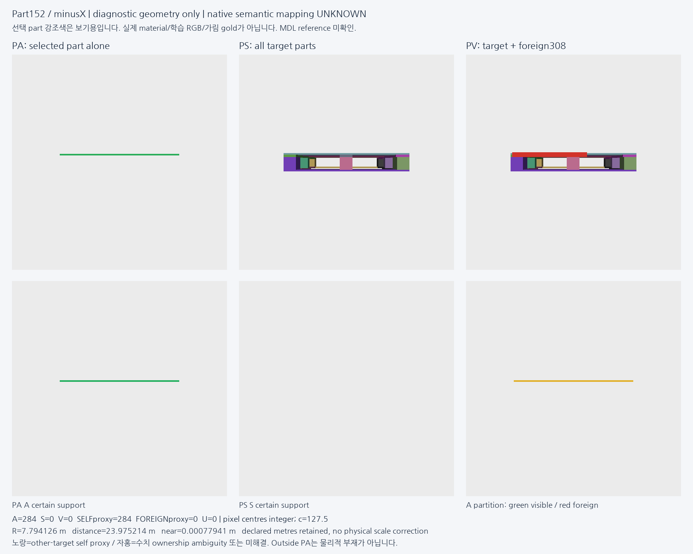
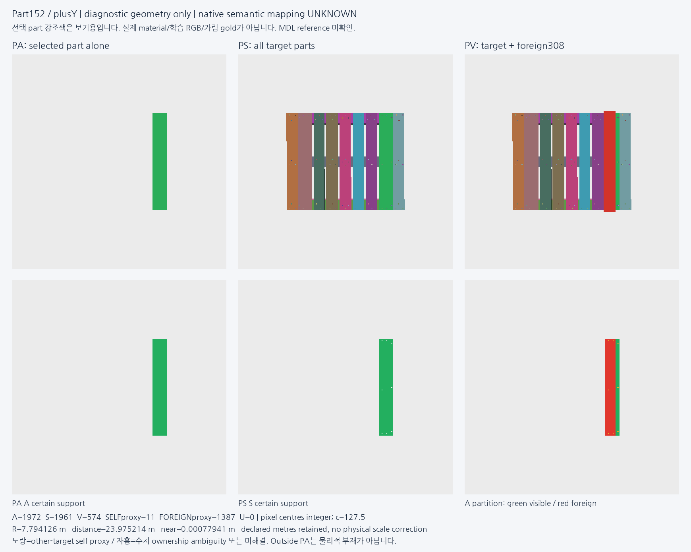
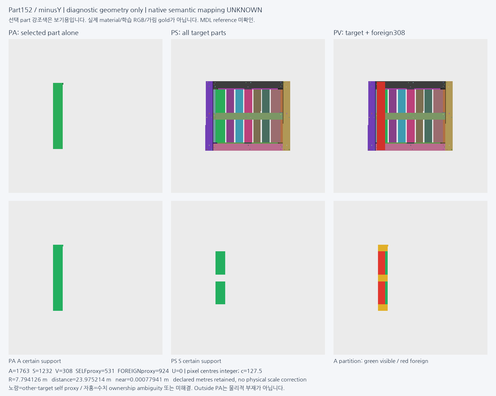
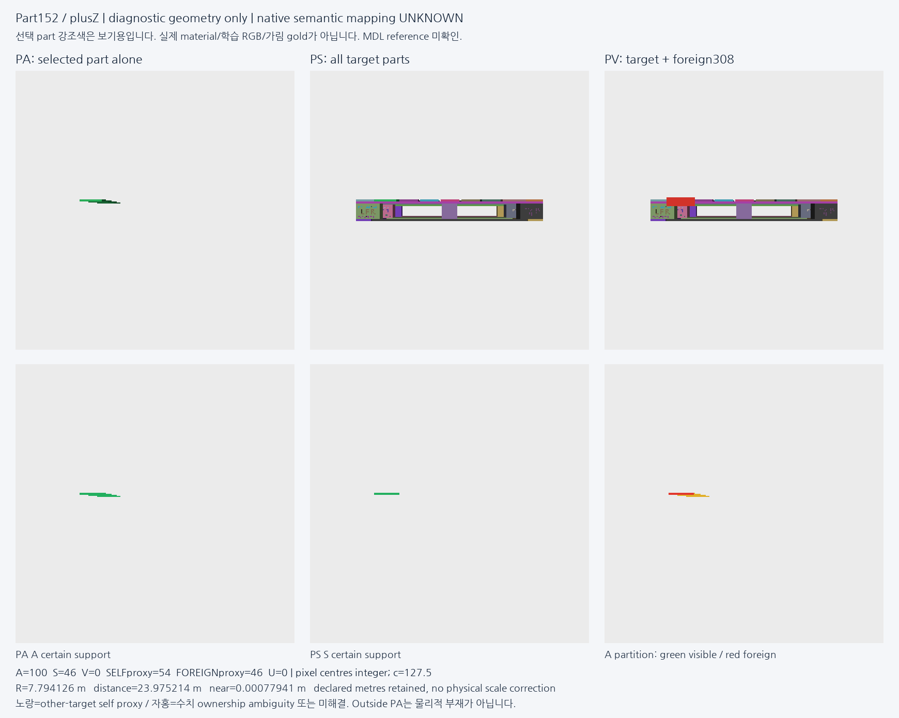
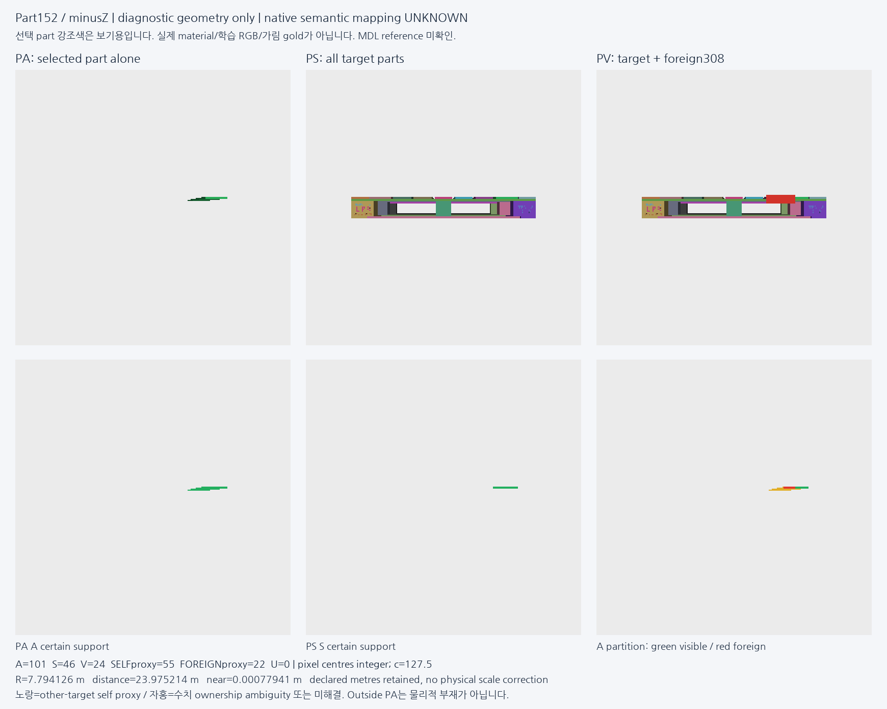
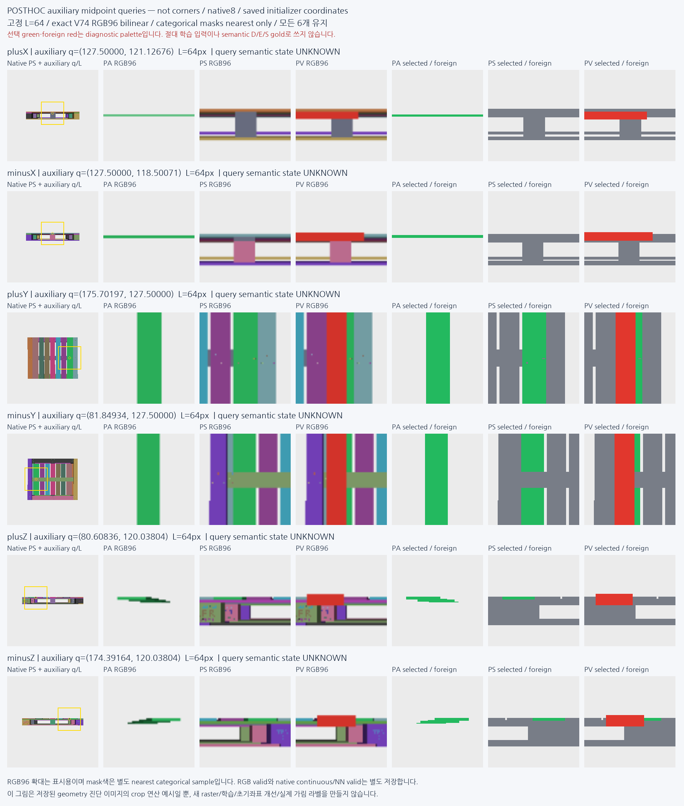

기대 부품이 숨겨져도 팔레트는 보일 수 있다
V93: 합성 geometry·가림 분리·같은 위치 crop 진단 완료. 분류 문제는 아직 미해결.
한 팔레트 모양 조립체의 긴 상판 하나를 고정하고, 여섯 카메라에서 부품 단독 A → 전체 조립체 S → 외부 가림 추가 V를 비교했다. 다른 부재 뒤에 상판이 완전히 숨는 시점에서도 조립체의 다른 표면은 남았다. 따라서 전체 팔레트의 존재나 재질만으로 기대 부품의 가시성을 판정할 수 없다.
이번 결과는 부품 전체의 opaque depth/owner 진단이다. 키포인트의 특정 모서리·접합선 가시성, 사람 D/E/S 정답, 새 모델 정확도를 측정한 결과가 아니다.
고정한 여섯 시점의 실제 렌더
수치는 분류 개수가 아니라 256×256 영상의 projected pixel 면적이다. A의 각 pixel을 V / 다른 부재에 숨음 / 추가 foreign에 숨음 / U로 나눈다. S와 V는 같은 원본 target raster layer를 재사용했다.
| 고정 시점 | A 단독 | S 조립체에서 보임 | V 외부 추가 후 보임 | 다른 부재에 숨음 | 추가 foreign에 숨음 | U |
|---|
| plusX | 100 | 0 | 0 | 100 | 0 | 0 |
| minusX | 284 | 0 | 0 | 284 | 0 | 0 |
| plusY | 1972 | 1961 | 574 | 11 | 1387 | 0 |
| minusY | 1763 | 1232 | 308 | 531 | 924 | 0 |
| plusZ | 100 | 46 | 0 | 54 | 46 | 0 |
| minusZ | 101 | 46 | 24 | 55 | 22 | 0 |
A 밖은 물리적 부재 정답이 아니다. Background·동률 owner·입력 누락을 SELF로 바꾸지 않는다. 이번 여섯 시점에서 수치 U=0이었으며, 보류 판별 능력을 학습한 것은 아니다.
실제 영상 관찰: parallel deck·가로 받침·블록·포크 통로가 한 직사각 팔레트 모양 조립체를 이룬다. 선택 part152는 긴 상부 deck board로 보인다. 정확한 corner cue와 native8 대응은 UNKNOWN이다.
308개 mesh를 한 target assembly로 보는 것은 모델링 가정이다. 여섯 영상과 일치하지만, 개별 hidden mesh의 의미·ownership이나 native identity를 인증하지는 않는다.
±X에서는 선택 부품이 전부 다른 부재에 숨는다. 아래 시점 −Y에서는 가로 받침 때문에 선택 부품이 여러 조각으로 나뉘어 보이고, 외부 물체가 추가로 다른 영역을 가린다.
plusX — A 100 / S 0 / V 0

minusX — A 284 / S 0 / V 0

plusY — A 1972 / S 1961 / V 574

minusY — A 1763 / S 1232 / V 308

plusZ — A 100 / S 46 / V 0

minusZ — A 101 / S 46 / V 24

같은 위치·같은 크기의 crop
모든 시점에서 보조 query를 부품 AABB 중심의 투영으로 정의하고 L=64px, RGB96을 사용했다. A/S/V의 q·L은 같다. 이는 저장 영상의 사후 연산자 예시이며, 실제 초기 추론 좌표·native8·모서리 cue가 아니다.

초록 selected / 빨강 foreign은 진단용 강조색이다. 이 영상이나 ID 색을 학습 입력으로 쓰면 정답이 새므로 훈련 데이터로 사용하지 않는다.
검산과 남은 조건
원본 USD↔export의 전체 좌표·triangle·part/material ID를 별도 코드로 검산했다. 렌더 전 생성 fixture에서 perspective 깊이, pixel centre, culling, shared edge, tie/U를 확인했고, 실제 저장 buffer는 사전에 고정한 광선 표본 정책으로 검산했다.
실제 광선 검산은 사전 정책으로 뽑은 29개 stratum 행(고유 광선 15개), 비어 있던 19개 stratum은 대체 없이 남겼다. 최대 깊이 차이는 1.07×10⁻¹⁴m였다. 전체 pixel을 별도 렌더러로 다시 만든 검사는 아니다. 저장하지 않은 per-part layer의 불변성은 producer가 남긴 before/after digest 증명에 한정하며, 저장된 PS 요약은 직접 검산했다.
렌더 14.00초, 최대 RSS 351.6MB. 새 학습·학습모델 forward·현재223 접근/추론·PnP는 모두 0이다.
기존 V91 현재 평가 결과는 그대로다. 외부 가림 전이와 작은 좌표오차에서도 남는 실패는 이번 geometry 진단으로 해결됐다고 주장할 수 없다.
다음은 특정 구조 단서의 support와 기대 identity를 정하고, 공개 실사·합성에서 같은 q 중심 scalar를 학습·검증하는 것이다. 부품 가림 감독은 보조 경로 하나이며, native virtual reference를 mesh 표면에 옮기거나 PnP를 최적화할 조건으로 삼지 않는다.
원본 material MDL을 찾지 못해 flat opaque palette를 사용했다. 실제 재질·물리 크기·asset 저작자/license는 인증되지 않았다. 공개 실사 AI 관찰과 합성 proxy를 사람 native D/E/S gold로 승격하지 않는다. 평가223은 직접 촬영 자료이며 KU Leuven 자료와 무관하다는 사용자 확인을 보존했다.
근거 파일
기계 판독 결과 · 실제 렌더 seal · USD↔NPZ 검산 · 렌더 코드 검토 · 실제 buffer 검산 · 여섯 영상 별도 관찰 · crop 진단 seal · 감독 의미 계약 V2 초안
Goal active / fully_solved=false. 새 threshold·checkpoint·모델 선택에 현재 평가셋을 사용하지 않는다.